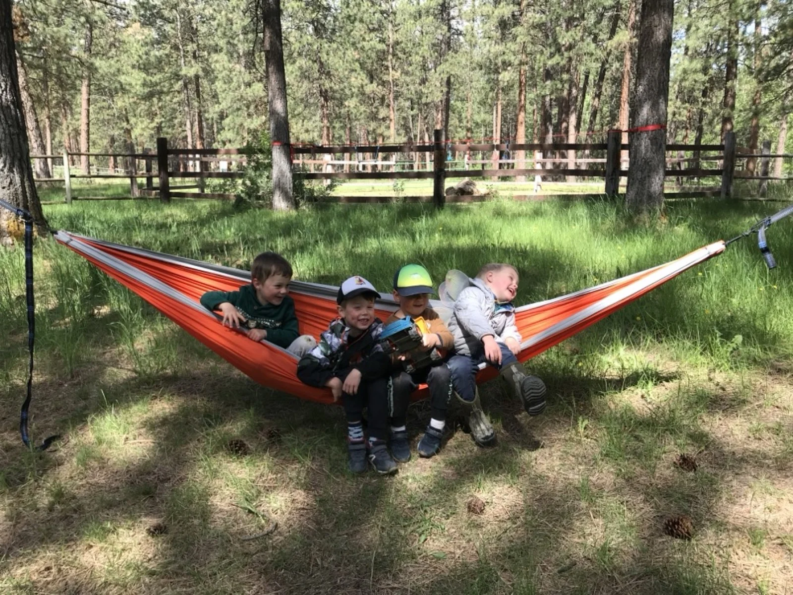

Baker City, Oregon
Explore. Play. Grow.
Holding space for every child to explore, play, and grow in connection with the natural world — at Old Souls Farm & Market, every season.
- September – May
- Ages 3 – 6
- Old Souls Farm, Baker City
- Registered Preschool Program

Our Story
Where the Natural World Is the Classroom
"The mission of Pine Creek Nature School is to hold space for every child to explore, play, and grow in connection with the natural world."
We work together to cultivate a deep sense of belonging by honoring each child's unique identity and voice, while nurturing a strong foundation for lifelong learning. Rooted in respect for self, others, and the environment, we support the development of the whole child through play-based exploration and hands-on activities involving art, science, math, literacy, and music.
Pine Creek Nature School is registered with the Oregon Department of Early Learning and Care as a recorded preschool program, and we serve potty-trained children ages 3–6.
Our Team
- Emily Denne — Owner & Lead Teacher, Chickadees and Bluebirds
- Amanda Grove — Lead Teacher, Stellar Jays
- Jessica Allen — Assistant Teacher, Chickadees
Where We Meet
We're located at 42692 Pocahontas Road, Baker City, OR on Old Souls Farm & Market at the base of the beautiful Elkhorn Mountains. Our outdoor classroom includes two heated yurts, a vault toilet, pavilion, storage shed, a pond, and a grove of willow, cottonwood, and alder trees.
We follow the Baker 5J School District calendar for school breaks and closures, running September through May.
How We Learn
Our Philosophy
We believe children are born naturalists — endlessly curious, endlessly capable. The natural world is our curriculum, every day and in every season.
Outdoor Immersion
The natural world is our classroom in every season. Dirt, sticks, rocks, water, and living things are our materials. We don't wait for perfect weather — we dress for it, rain or shine.
Play-Based Exploration
We investigate nature through hands-on activities in art, science, math, literacy, and music — and most importantly, play. When a child stops to watch an ant carry a crumb, that is science. When they build with bark and moss, that is engineering and art.
Whole-Child Growth
Social, emotional, physical, and cognitive development happen together. We honor each child's unique identity and voice, cultivating a deep sense of belonging while building resilience, friendships, and the confidence to move through the world.
Respect & Stewardship
Rooted in respect for self, others, and the environment, we tend the land as neighbors worth caring for. Children learn the seasonal cycles of our valley and grow up knowing the natural world as something to cherish.
Learn more about the benefits of outdoor preschool in Oregon →
Classes & Curriculum
Our Programs
Three age-grouped classes allow every child to move at their own pace while building deep friendships within a consistent community of peers.
Chickadees
Ages 3 – 4
Our youngest naturalists begin building a relationship with the outdoors in a gentle, nurturing setting. Small group sizes ensure every child feels safe, seen, and celebrated.
- Days: Tuesday, Wednesday & Thursday
- Hours: 8:30 am – 11:30 am
- Focus: Sensory play, nature exploration, art & story
Bluebirds
Ages 4 – 5
Bluebirds are ready to roam further, ask bigger questions, and build lasting friendships. This program leans into imaginative play, science inquiry, and hands-on exploration of the farm and its seasonal cycles.
- Days: Tuesday, Wednesday & Thursday
- Hours: 12:30 pm – 3:30 pm
- Focus: Imaginative play, science, music & literacy
Stellar Jays
Ages 5 – 6
Our Stellar Jays are kindergarten-ready explorers. Four days a week they deepen nature knowledge, practice literacy and math in context, and develop the confidence and curiosity to take on new challenges.
- Days: Monday, Tuesday, Wednesday & Thursday
- Hours: 9:00 am – 1:00 pm
- Focus: Literacy, math, science inquiry & stewardship
All programs are held outdoors, rain or shine. Please dress your child in weather-appropriate layers and sturdy footwear every day.
Our Daily Rhythm
Chickadees (Ages 3–4) — Tues / Wed / Thurs
- 8:30
- Drop-Off & Morning Invitation
- 8:50
- Today's Inquiry (Lesson / Activity)
- 9:30
- Music & Movement
- 9:45
- Snack & Story
- 10:00
- Nature Exploration / Free Play
- 11:30
- Pick-Up
Bluebirds (Ages 4–5) — Tues / Wed / Thurs
- 12:30
- Drop-Off & Afternoon Invitation
- 12:50
- Today's Inquiry (Lesson / Activity)
- 1:30
- Music & Movement
- 1:45
- Snack & Story
- 2:00
- Nature Exploration / Free Play
- 3:30
- Pick-Up
Stellar Jays (Ages 5–6) — Mon / Tues / Wed / Thurs
- 9:00
- Drop-Off & Morning Invitation
- 9:20
- Morning Inquiry (Literacy & Math Lessons)
- 10:00
- Music & Movement
- 10:15
- Snack & Story
- 10:30
- Free Play
- 11:30
- Guided Nature Exploration / Science Inquiry
- 12:00
- Lunch & Story
- 1:00
- Pick-Up
Life at Pine Creek
A Day on the Farm
From Our Families
What Parents Say
"Watching my daughter come home covered in mud and beaming from ear to ear — that's when I knew we'd found exactly the right place. She talks about the creek, the animals, the farm. Pine Creek gave her a whole world."
"Emily has a rare gift for seeing each child exactly as they are and meeting them there. My son was shy and struggled in group settings. After one year at Pine Creek he was leading the other kids on explorations."
"Rain, mud, snow — they go out in all of it. My kids used to drag their feet getting dressed; now they can't wait. That shift says everything about what Pine Creek has done for our family."
Join Our Community
Enrollment
Pine Creek Nature School uses Brightwheel to manage enrollment, billing, and communication between staff and families.
Start by creating a Brightwheel account and completing our General Interest Form. This can be done for an upcoming school year or any future year. If space is available, you'll receive an Admissions Packet through the app to complete enrollment.
Create a Brightwheel Account
Sign up at mybrightwheel.com and complete the General Interest Form.
Receive Your Admissions Packet
If space is available, we'll send an Admissions Packet through Brightwheel to complete your child's enrollment.
Welcome to Pine Creek!
Pay the enrollment fee and get ready for an adventure. We'll make sure every child has a gentle, joyful start.
Fees & Tuition
| Class | Ages | Monthly Tuition |
|---|---|---|
| Chickadees | 3–4 | $375 / month |
| Bluebirds | 4–5 | $375 / month |
| Stellar Jays | 5–6 | $520 / month |
- A $100 enrollment fee (non-refundable) holds your child's spot and applies toward the first month's tuition.
- A $50 materials & site fee is charged in September and January.

Resources
For Families
Helpful links for current and prospective Pine Creek families.